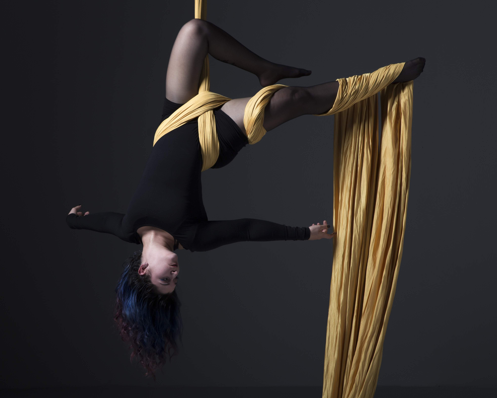

When I was a kid, I wanted to be an artist. I took art classes and cried when, in kindergarten, someone took the “future job” of Artist before I could and I had to pick architect because there couldn’t be two artists. I spent Christmas of 2017 going through the entire collection of every scribble and Cray-Paz piece I crafted that my mom saved. Looking at those pieces, I wouldn’t say I was destined to be an artist.
But now my job is to look at information and organize it, to design experiences through careful analysis of interactions, emotions, and expectations - maybe this is art if you think about it.
My background is in words. I wrote all throughout high school and college, earning a bachelor’s degree in fiction writing and philosophy and later, a master’s in professional writing. But writing the words wasn’t really where my love settled - organizing the words was. The puzzle-putting-togetherness of information architecture captured my passion and swept me up.
I was fortunate enough to work at a mobile app consultancy as I learned what a UX designer is responsible for and am currently a product designer for a wide variety of clients and projects.
Outside of my day job, you can find me hanging upside down at Iron City Circus Arts in Pittsburgh, PA.

Necessitatibus
Velit, odit, eius, libero unde impedit quaerat dolorem assumenda alias consequuntur optio quae maiores ratione tempore sit aliquid architecto eligendi pariatur ab soluta doloremque dicta aspernatur labore quibusdam dolore corrupti quod inventore. Maiores, repellat, consequuntur eius repellendus eos aliquid molestiae ea laborum ex quibusdam laudantium voluptates placeat consectetur quam aliquam!
Fugit, laboriosam
Eum, quasi, est, vitae, ipsam nobis consectetur ea aspernatur ad eos voluptatibus fugiat nisi perferendis impedit. Quam, nulla, excepturi, voluptate minus illo tenetur sint ab in culpa cumque impedit quibusdam. Saepe, molestias quia voluptatem natus velit fugiat omnis rem eos sapiente quasi quaerat aspernatur quisquam deleniti accusantium laboriosam odio id?